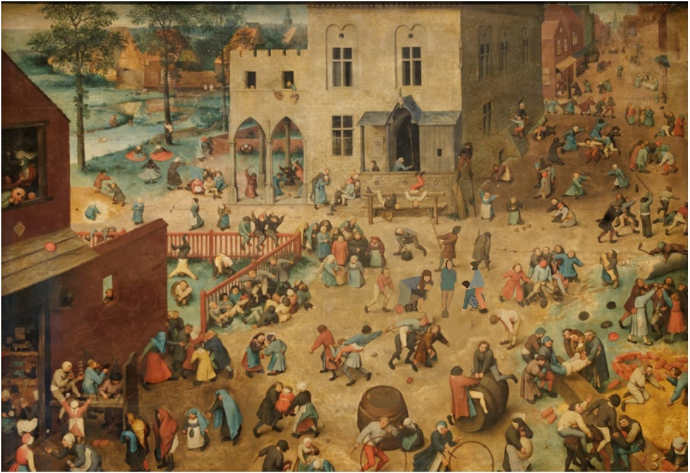

🎨 전시 참여형 미술 퀴즈
브뤼겔 속 숨은 장면 찾기!
10문제 · 문제당 5초 · 개인 QR 참여
그림 속 숨은 장면을
찾아라!
위에 나타나는 확대 그림을 보고, 아래 확대된 장면을 보고, 아래에 제시되는 전체 그림 속 같은 위치를 빠르게 터치하세요.

게임을 시작하면 10문제가 연속으로 출제됩니다. 문제마다 전체 그림이 달라질 수 있으며, 참가자 이름·점수·소요 시간만 기록합니다.
위에 나타나는 확대 그림을 보고, 아래 확대된 장면을 보고, 아래에 제시되는 전체 그림 속 같은 위치를 빠르게 터치하세요.

게임을 시작하면 10문제가 연속으로 출제됩니다. 문제마다 전체 그림이 달라질 수 있으며, 참가자 이름·점수·소요 시간만 기록합니다.